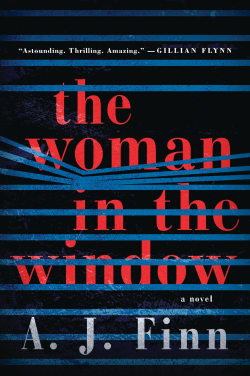
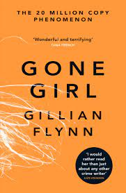
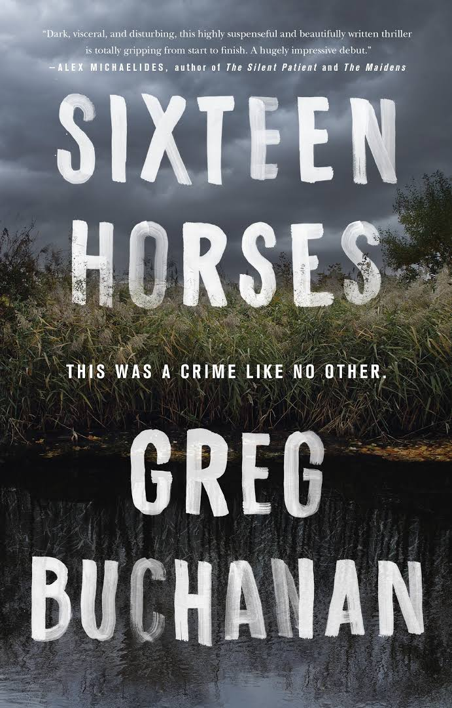
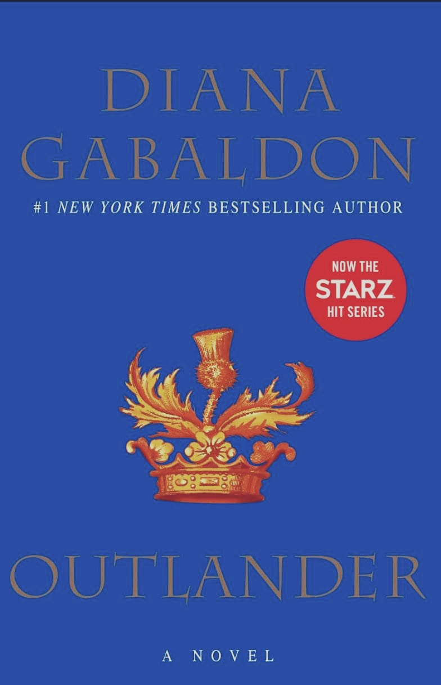
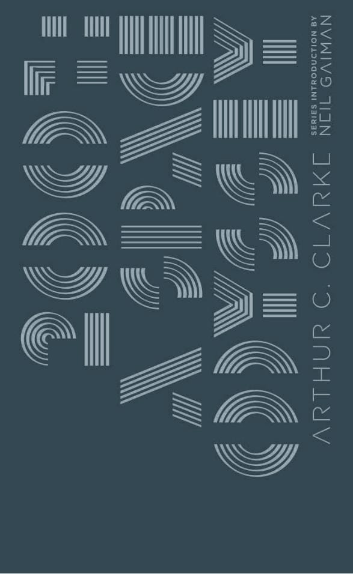
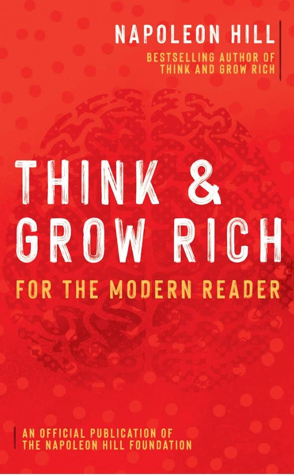
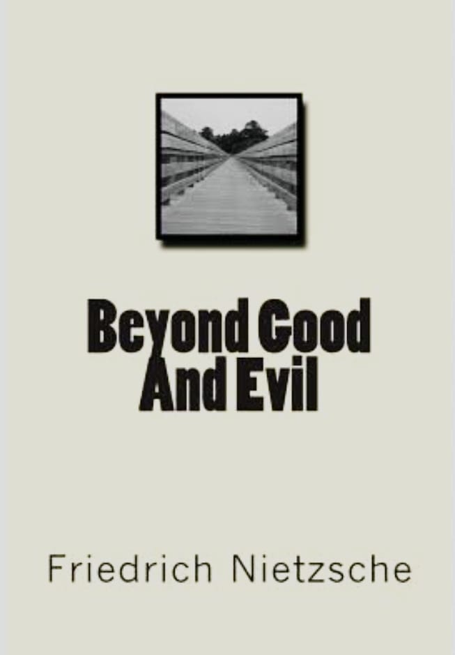
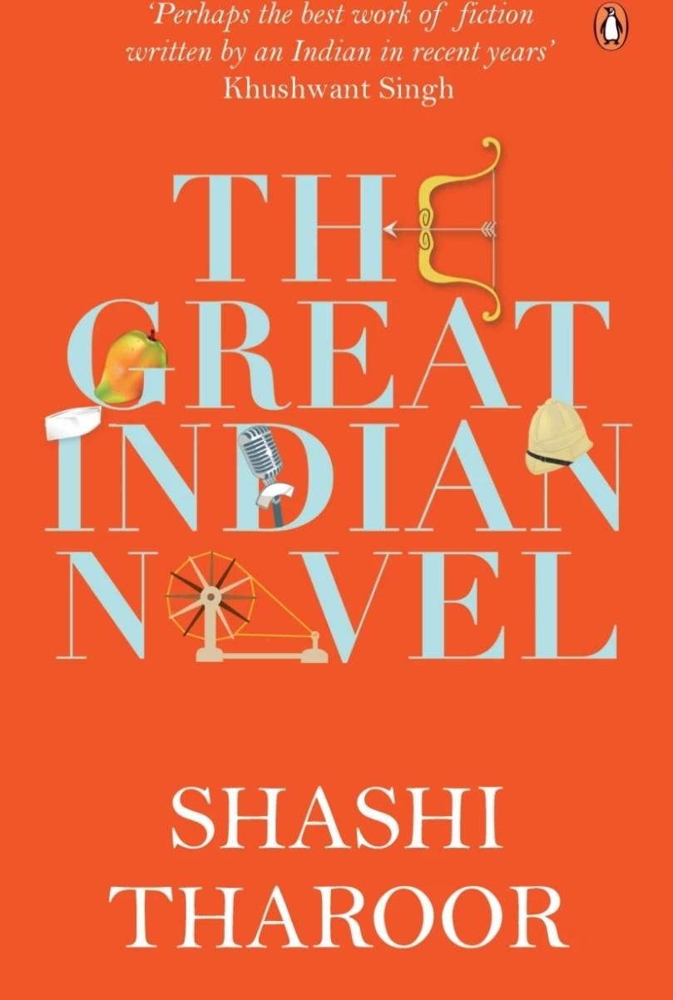

Window
Crime and Thriller books have always been a favorite of avid readers. They offer a thrilling ride through the criminal underworld, often investigating cases that the police can't solve. These books are filled with suspense and unexpected twists, making them almost impossible to put down. Readers get to experience the rush of trying to solve the mystery before the protagonist, and the adrenaline-pumping ending is often the icing on the cake. From gritty detective stories to whodunits and psychological thrillers, Crime and Thriller books provide a unique and exciting escape from reality. So if you're looking for a thrilling read, you can't go wrong with a crime or thriller book. You'll be transported into another world and get a unique insight into the criminal mind. Grab one of these thrilling books, and see if you have what it takes to solve the mystery!
|
|
 | |||
| The Silent Patient |
The Woman in the Window |
The Surgeon | In Cold Blood | The Guest List |
| view more details | view more details | view more details | view more details | view more details |
|  |  | |||
| Gone Girl |
The Girl with the Dragon Tattoo |
Verity | Dare Me | Sixteen Horses |
| view more details | view more details | view more details | view more details | view more details |
Romance books are a great way to escape reality and explore a world of
fantasy and adventure. Whether you're looking
for a thrilling adventure or a heartwarming love story, there's a
romance book out there for you. From historical
romances to steamy contemporaries, the possibilities are endless.
Romance books are also great for getting lost in
a different world and exploring different cultures, settings, and
characters. You could be reading about a passionate
love affair in the Middle Ages, a forbidden romance in India, or a
tender love story in the Caribbean. And when it
comes to the characters, you'll find a wide variety of personalities,
from strong and independent heroines to swoon-worthy
heroes. So if you're looking for an escape from the real world, there's
no better way than to dive into a romance book.
With just a few pages, you'll be transported to a world filled with
passion, adventure, and love.
|  |  |
|||
| Outlander | Pride and Prejudice | The Notebook | It Starts With Us | It Ends With Us |
| view more details | view more details | view more details | view more details | view more details |
| A Touch Of Eternity | November 9 | Better Than Best Friends | The Girl In Room 105 | The Fault In Our Stars |
| view more details | view more details | view more details | view more details | view more details |
A fictional book may provide the basis of the plot of a story, a common
thread in a series of books or other works,
or the works of a particular writer or canon of work. An example of a
fictional book that is part of the plot of
another work (in addition to Nineteen Eighty-Four) is Philip K. Dick's
The Man in the High Castle, in which resistance
member circulate a banned book entitled The Grasshopper Lies Heavy. An
example of a fictional book linking a series
is Encyclopedia Galactica, an imaginary set of encyclopedias created by
Isaac Asimov and referred to in the novels
in his Foundation Series. An example of an author referring to a
fictional book in a number of unconnected works is
Jack Vance's quotes from an imaginary twelve-volume opus entitled Life
by Unspiek, Baron Bodissey in Vance's novels
(Bodissey is a fictional character created by Vance).

|
 |
 |
 |
 |
| To Kill a Mockingbird | The Alchemist | Nineteen Eighty-Four | Jane Eyre | Gone Girl |
| view more details | view more details | view more details | view more details | view more details |
| The Unexpected Guest | The House Of Strange Stories | The Girl With No Dreams | A Thing Beyond Forever | The Zahir: A Novel of Obsession |
| view more details | view more details | view more details | view more details | view more details |
Mystery fiction is a loosely-defined term that is often used as a
synonym of detective fiction — in other words
a novel or short story in which a detective (either professional or
amateur) solves a crime. The term "mystery fiction"
may sometimes be limited to the subset of detective stories in which the
emphasis is on the puzzle element and its
logical solution (cf. whodunit), as a contrast to hardboiled detective
stories which focus on action and gritty realism.
However, in more general usage "mystery" may be used to describe any
form of crime fiction, even if there is no mystery
to be solved. For example, the Mystery Writers of America describes
itself as "the premier organization for mystery
writers, professionals allied to the crime writing field, aspiring crime
writers, and those who are devoted to the
genre". Although normally associated with the crime genre, the term
"mystery fiction" may in certain situations refer to
a completely different genre, where the focus is on supernatural mystery
(even if no crime is involved). This usage
was common in the pulp magazines of the 1930s and 1940s, where titles
such as Dime Mystery, Thrilling Mystery and Spicy
Mystery offered what at the time were described as "weird menace"
stories – supernatural horror in the vein of Grand
Guignol. This contrasted with parallel titles such as Dime Detective,
Thrilling Detective and Spicy Detective, which
contained conventional hardboiled crime fiction. The first use of
"mystery" in this sense was by Dime Mystery, which
started out as an ordinary crime fiction magazine but switched to "weird
menace" during the latter part of 1933.
 |
 |
|||
|
Murder on the Orient Express |
Rebecca | O Código Da Vinci | The Perfect Murder | The Devil In You |
| view more details | view more details | view more details | view more details | view more details |
| One Of Us Is Lying | The Woman In White | The Big Sleep | The Little Lies | Sharp Objects |
| view more details | view more details | view more details | view more details | view more details |
A biography, or simply bio, is a detailed description of a person's life. It involves more than just basic facts like education,
work, relationships, and death; it portrays a person's experience of these life events. Unlike a profile or curriculum vitae (résumé),
a biography presents a subject's life story, highlighting various aspects of their life, including intimate details of experience, and
may include an analysis of the subject's personality.
Biographical works are usually non-fiction, but fiction can also be used to portray a person's life. One in-depth form of biographical
coverage is called legacy writing. Works in diverse media, from literature to film, form the genre known as biography.
An authorized biography is written with the permission, cooperation, and at times, participation of a subject or a subject's heirs.
An autobiography is written by the person themselves, sometimes with the assistance of a collaborator or ghostwrite
 |
||||
| Steve Jobs |
Einstein: His Life and Universe |
The Autobiography of Malcolm X |
The Immortal Life of Henrietta Lacks |
Becoming |
| view more details | view more details | view more details | view more details | view more details |

|
 |
|||
|
The Diary of a Young Girl |
Alexander Hamilton |
Frida:A Biography of Frida Kahlo |
Autobiography of a Yogi | Elon Musk |
| view more details | view more details | view more details | view more details | view more details |
New adult (NA) fiction is a developing genre of fiction with protagonists in the 18–29 age bracket.[1] St. Martin's Press first
coined the term in 2009, when they held a special call for "fiction similar to young adult fiction (YA) that can be published and
marketed as adult—a sort of an 'older YA' or 'new adult'".[2] New adult fiction tends to focus on issues such as leaving home,
developing sexuality, and negotiating education and career choices.[3] The genre has gained popularity rapidly over the last few years,
particularly through books by self-published bestselling authors like Jennifer L. Armentrout, Cora Carmack, Colleen Hoover, Anna Todd,
and Jamie McGuire.
The genre originally faced criticism, as some viewed it as a marketing scheme,[6] while others claimed the readership was not there
to publish the material.[7] In contrast, others claimed the term was necessary; a publicist for HarperCollins described it as "a
convenient label because it allows parents and bookstores and interested readers to know what is inside".
Examples of books in the new adult genre include Sarah J. Maas's A Court of Thorns and Roses and Throne of Glass, Jennifer L.
Armentrout's Wait For You and Blood and Ash series, Jamie McGuire's Beautiful Disaster,[9] Colleen Hoover's Slammed,[10] Cora Carmack's
Losing It,[11] Kendall Ryan's The Impact of You[12] and Casey McQuiston's Red, White & Royal Blue.
 |
 |
|||
|
The Midnight Library |
Me Before You | Book Lovers |
Fifty Shades of Grey |
Seven Husbands |
| view more details | view more details | view more details | view more details | view more details |

|
 |
|||
|
The Catcher in the Rye |
Lord of the Flies |
The Seven Husbands of Evelyn Hugo |
Aristotle and Dante Discover the Secrets of the Universe |
Stargirl |
| view more details | view more details | view more details | view more details | view more details |
Science fiction (sometimes shortened to sf or sci-fi) is a genre of speculative fiction, which typically deals with imaginative
and futuristic concepts such as advanced science and technology, space exploration, time travel, parallel universes, and
extraterrestrial life. Science fiction can trace its roots to ancient mythology.[1] It is related to fantasy, horror, and
superhero fiction and contains many subgenres. Its exact definition has long been disputed among authors, critics, scholars, and
readers.
Science fiction, in literature, film, television, and other media, has become popular and influential over much of the world. It
has been called the "literature of ideas", and often explores the potential consequences of scientific, social, and technological
innovations. It sometimes serves as an outlet to facilitate future scientific and technological innovations. Besides providing
entertainment, it can also criticize present-day society and explore alternatives. It is also often said to inspire a "sense of wonder".
| Dune |
The Left Hand Of Darkness |
The Martian |
The Hitchhiker's Guide |
Neuromancer |
| view more details | view more details | view more details | view more details | view more details |
|  | ||||
|
The Three-Body Problem |
Snow Crash | The Time Machine |
The War Of The Worlds |
2001:A Space Odyssey |
| view more details | view more details | view more details | view more details | view more details |
A self-help book is one that is written with the intention to instruct its readers on solving personal problems. The books
take their name from Self-Help, an 1859 best-seller by Samuel Smiles, but are also known and classified under "self-improvement",
a term that is a modernized version of self-help. Self-help books moved from a niche position to being a postmodern cultural
phenomenon in the late twentieth century.
|  | ||||
| Ikigai |
Life Sucks. Get Used To It. |
Life Within Dreams | Think & Grow Rich | Atomic Habits |
| view more details | view more details | view more details | view more details | view more details |
| Tuesdays With Morrie | Eat, Pray, Love | Rich Dad Poor Dad | The Art Of Happiness | Untamed |
| view more details | view more details | view more details | view more details | view more details |
Non-fiction (or nonfiction) is any document or media content that attempts, in good faith, to convey information only about
the real world, rather than being grounded in imagination. Non-fiction typically aims to present topics objectively based
on historical, scientific, and empirical information. However, some non-fiction ranges into more subjective territory, including
sincerely held opinions on real-world topics.
Based on the author's intention or the purpose of the content, the main genres of non-fiction are instructional, explanatory,
discussion-based, report-based (non-chronological), opinion-based (persuasive) and relating (chronological recounting) non-fiction.
Non-fictional works of these different genres can be created with the help of a range of structures or formats,
| Sapiens |
Between The World And Me |
Educated |
A Brief History of Time |
A Short History of Nearly Everything |
| view more details | view more details | view more details | view more details | view more details |
Philosophy (from Greek: φιλοσοφία, philosophia, 'love of wisdom') is the systematized study of general and fundamental
questions, such as those about existence, reason, knowledge, values, mind, and language. Some sources claim the term was coined
by Pythagoras (c. 570 – c. 495 BCE),[8][9] although this theory is disputed by some. Philosophical methods include questioning,
critical discussion, rational argument, and systematic presentation.
Historically, philosophy encompassed all bodies of knowledge and a practitioner was known as a philosopher. "Natural philosophy",
which began as a discipline in ancient India and Ancient Greece, encompasses astronomy, medicine, and physics. For example,
Isaac Newton's 1687 Mathematical Principles of Natural Philosophy later became classified as a book of physics. In the 19th century,
the growth of modern research universities led academic philosophy and other disciplines to professionalize and specialize. Since
then, various areas of investigation that were traditionally part of philosophy have become separate academic disciplines, and namely
the social sciences such as psychology, sociology, linguistics, and economics.
|  | ||||
|
Beyond Good and Evil |
The Nicomachean Ethics |
History of Western Philosophy |
Republic |
The Story of Philosophy |
| view more details | view more details | view more details | view more details | view more details |
Political fiction employs narrative to comment on political events, systems and theories. Works of political fiction, such
as political novels, often "directly criticize an existing society or present an alternative, even fantastic, reality". The
political novel overlaps with the social novel, proletarian novel, and social science fiction.
Plato's Republic, a Socratic dialogue written around 380 BC, has been one of the world's most influential works of philosophy
and political theory, both intellectually and historically.[2][3] The Republic is concerned with justice (δικαιοσύνη), the order
and character of the just city-state, and the just man.[4] Other influential politically themed works include Thomas More's Utopia
(1516), Jonathan Swift's Gulliver's Travels (1726), Voltaire's Candide (1759), and Harriet Beecher Stowe's Uncle Tom's Cabin (1852).
Political fiction frequently employs satire, often in the utopian and dystopian genres. This includes totalitarian dystopias of the
early 20th century such as Jack London's The Iron Heel, Sinclair Lewis' It Can't Happen Here, and George Orwell's Nineteen Eighty-Four
|
The Madness of Crowds |
Why We're Polarized |
Bundle | The Fifth Risk | The Anarchy |
| view more details | view more details | view more details | view more details | view more details |
The meaning of spirituality has developed and expanded over time, and various meanings can be found alongside each other.
Traditionally, spirituality referred to a religious process of re-formation which "aims to recover the original shape of man",
oriented at "the image of God" as exemplified by the founders and sacred texts of the religions of the world. The term was
used within early Christianity to refer to a life oriented toward the Holy Spirit[6] and broadened during the Late Middle Ages
to include mental aspects of life.
 |
||||
|
The Power of Now |
The Untethered Soul | Siddhartha |
The Celestine Prophecy |
The Secret |
| view more details | view more details | view more details | view more details | view more details |
The Bible (from Koine Greek τὰ βιβλία, tà biblía, 'the books') is a collection of religious texts or scriptures that are held
to be sacred in Christianity, Judaism, Samaritanism, and many other religions. The Bible is an anthology – a compilation of
texts of a variety of forms – originally written in Hebrew, Aramaic, and Koine Greek. These texts include instructions, stories,
poetry, and prophecies, among other genres. The collection of materials that are accepted as part of the Bible by a particular
religious tradition or community is called a biblical canon. Believers in the Bible generally consider it to be a product of
divine inspiration, but the way they understand what that means and interpret the text can vary.
| The Bhagwat Gita |
Secrets of Divine Love |
Eye of Shiva | History of Bible |
The Miracle of Theism |
| view more details | view more details | view more details | view more details | view more details |
A comic book, also called comicbook,[1][2] comic magazine or (in the United Kingdom and Ireland) simply comic, is a publication
that consists of comics art in the form of sequential juxtaposed panels that represent individual scenes. Panels are often
accompanied by descriptive prose and written narrative, usually, dialogue contained in word balloons emblematic of the comics art
form. Comic Cuts" was a British comic published from 1890 to 1953. It was preceded by "Ally Sloper's Half Holiday" (1884) which
is notable for its use of sequential cartoons to unfold narrative. These British comics existed alongside of the popular lurid
"Penny dreadfuls" (such as "Spring-heeled Jack"), boys' "Story papers" and the humorous Punch (magazine) which was the first to
use the term "cartoon" in its modern sense of a humorous drawing. The interweaving of drawings and the written word had been
pioneered by, among others, William Blake (1757 - 1857) in works such as Blake's "The Descent Of Christ" (1804 - 1820)
| Maus | Nimona | Watchmen | Batman | Saga |
| view more details | view more details | view more details | view more details | view more details |
Poetry (derived from the Greek poiesis, "making"), also called verse,[note 1] is a form of literature that uses aesthetic
and often rhythmic qualities of language − such as phonaesthetics, sound symbolism, and metre − to evoke meanings
in addition to, or in place of, a prosaic ostensible meaning. A poem is a literary composition, written by a poet, using this
principle.
Poetry has a long and varied history, evolving differentially across the globe. It dates back at least to prehistoric times with
hunting poetry in Africa and to panegyric and elegiac court poetry of the empires of the Nile, Niger, and Volta River valleys.
Some of the earliest written poetry in Africa occurs among the Pyramid Texts written during the 25th century BCE. The earliest
surviving Western Asian epic poetry, the Epic of Gilgamesh, was written in Sumerian.
 |
||||
| Leaves of Grass | Citizen | Milk And Honey |
The Sun And Her Flowers |
The 40 Rules Of Love |
| view more details | view more details | view more details | view more details | view more details |
Erotic literature comprises fictional and factual stories and accounts of eros (passionate, romantic or sexual relationships)
intended to arouse similar feelings in readers.[1] This contrasts erotica, which focuses more specifically on sexual feelings.
Other common elements are satire and social criticism. Much erotic literature features erotic art, illustrating the text.
Although cultural disapproval of erotic literature has always existed, its circulation was not seen as a major problem before
the invention of printing, as the costs of producing individual manuscripts limited distribution to a very small group of wealthy
and literate readers. The invention of printing, in the 15th century, brought with it both a greater market and increasing
restrictions, including censorship and legal restraints on publication on the grounds of obscenity.[2] Because of this, much
of the production of this type of material became clandestine.
| Bared to You |
The Claiming of Sleeping Beauty |
Beautiful Bastard | Fifty Shades Darker | Reflected in You |
| view more details | view more details | view more details | view more details | view more details |
Feminist literature is fiction, nonfiction, drama, or poetry, which supports the feminist goals of defining, establishing,
and defending equal civil, political, economic, and social rights for women. It often identifies women's roles as unequal to
those of men – particularly as regarding status, privilege, and power – and generally portrays the consequences to women, men,
families, communities, and societies as undesirable.
|
A Room Of One's Own |
The Handmaid's Tale |
The Second Sex | Bad Feminist |
We Should All Be Feminists |
| view more details | view more details | view more details | view more details | view more details |
Sociology is a social science that focuses on society, human social behavior, patterns of social relationships, social
interaction, and aspects of culture associated with everyday life.It uses various methods of empirical investigation
and critical analysis[4]: 3–5 to develop a body of knowledge about social order and social change.: 32–40 While some
sociologists conduct research that may be applied directly to social policy and welfare, others focus primarily on refining the
theoretical understanding of social processes and phenomenological method. Subject matter can range from micro-level analyses of
society (i.e. of individual interaction and agency) to macro-level analyses (i.e. of social systems and social structure).
| Suicide |
The Sociological Imagination |
Economy and Society | Discipline And Punish |
A Dictionary Of Sociology |
| view more details | view more details | view more details | view more details | view more details |
Horror is a genre of fiction that is intended to disturb, frighten or scare. Horror is often divided into the sub-genres
of psychological horror and supernatural horror, which are in the realm of speculative fiction. Literary historian J. A. Cuddon,
in 1984, defined the horror story as "a piece of fiction in prose of variable length... which shocks, or even frightens the reader,
or perhaps induces a feeling of repulsion or loathing".[2] Horror intends to create an eerie and frightening atmosphere for the reader.
Often the central menace of a work of horror fiction can be interpreted as a metaphor for larger fears of a society.
 |
||||
| House of Leaves |
The Haunting of Hill House |
The Shining | Dracula |
The Only Good Indians |
| view more details | view more details | view more details | view more details | view more details |
Indian English literature (IEL), also referred to as Indian Writing in
English (IWE), is the body of work by writers in India who
write in the English language but whose native or co-native language
could be one of the numerous languages of India. Its early history
began with the works of Henry Louis Vivian Derozio and Michael
Madhusudan Dutt followed by Rabindranath Tagore and Sri
Aurobindo.[citation
needed] R. K. Narayan, Mulk Raj Anand and Raja Rao contributed to the
growth and popularity of Indian English fiction in the 1930s.[1]
It is also associated, in some cases, with the works of members of the
Indian diaspora who subsequently compose works in English.
It is frequently referred to as Indo-Anglian literature. (Indo-Anglian
is a specific term in the sole context of writing that should
not be confused with Anglo-Indian). Although some Indo-Anglian works may
be classified under the genre of postcolonial literature, the
repertoire of Indian English literature encompasses a wide variety of
themes and ideologies, from the late eighteenth-century to the
present
day, and thereby eludes easy categorization.
| One Indian Girl |
I Wish I Was An Extrovert |
Silent Love |
Being Aa Indian Teenager |
Something I Never Told You |
| view more details | view more details | view more details | view more details | view more details |
 |
 | |||
| One Arranged Murder | The Hidden Hindu |
Jail Diary Of Bhagat Singh |
Why I Am An Atheist |
The Great Indian Novel |
| view more details | view more details | view more details | view more details | view more details |
The war novel's origins are in the epic poetry of the classical and medieval periods, especially Homer's The Iliad, Virgil's The
Aeneid, sagas like the Old English Beowulf, and Arthurian literature. All of these epics were concerned with preserving the history
or mythology of conflicts between different societies, while providing an accessible narrative that could reinforce the collective
memory of a people. Other important influences on the war novel included the tragedies of dramatists such as Euripides, Seneca the
Younger, Christopher Marlowe, and Shakespeare. Euripides' The Trojan Women is a powerfully disturbing play on the theme of war's
horrors, apparently critical of Athenian imperialism.[1] Shakespeare's Henry V, which focuses on events immediately before and after
the Battle of Agincourt (1415) during the Hundred Years' War, provides a model for how the history, tactics, and ethics of war could be
combined in an essentially fictional framework. Romances and satires in Early Modern Europe, like Edmund Spenser's epic poem The Faerie
Queene and Miguel de Cervantes's novel Don Quixote, to name but two, also contain elements that influenced the later development of
war novels. In terms of imagery and symbolism, many modern war novels (especially those espousing an anti-war viewpoint) are influenced
by Dante's depiction of Hell in the Inferno, John Milton's account of the war in Heaven in Paradise Lost, and the Apocalypse as depicted
in the biblical Book of Revelation. A Notable non-western example of war novel is Luo Guanzhong's Romance of the Three Kingdoms.
As the realistic form of the novel rose to prominence in the seventeenth century, the war novel began to develop its modern form,
although most novels featuring war were picaresque satires rather than truly realistic portraits of war. An example of one such work
is Hans Jakob Christoffel von Grimmelshausen's Simplicius Simplicissimus, a semi-autobiographical account of the Thirty Years' War.
| Catch-22 | Regeneration | The Kite Runner |
All Quiet on the Western Front |
For Whom the Bell Tolls |
| view more details | view more details | view more details | view more details | view more details |
|
All the Light We Cannot See |
Slaughterhouse-Five | Birdsong | A Farewell to Arms | The Winds Of War |
| view more details | view more details | view more details | view more details | view more details |